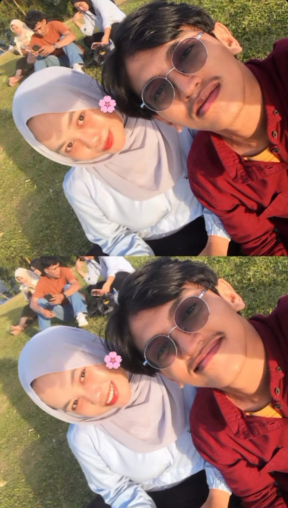
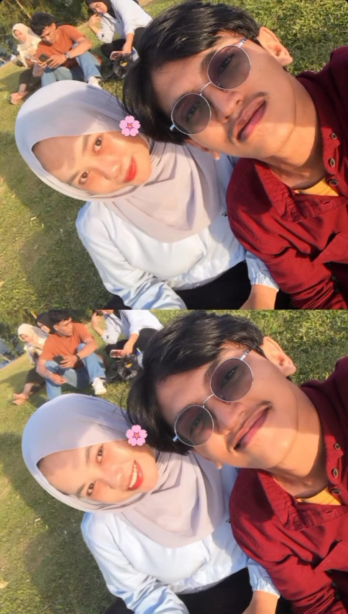

Welcome My Love ❤️
Happy Anniversary 365 Days with you is the best gift of my life.
Happy Anniversary 365 Days with you is the best gift of my life.
Kita pertama kali bertemu di Telegram. Awalnya hanya saling sapa, ngobrol seadanya, tapi dalam hitungan hari, aku sudah merasa nyaman denganmu. Ada sesuatu yang berbeda—cara kamu bicara, cara kamu mendengarkan, dan cara kamu membuatku merasa aman meski baru mengenalmu. Dalam waktu kurang dari seminggu, aku sadar bahwa kamu bukan hanya teman ngobrol biasa, tapi seseorang yang membuat hatiku tenang.
Seiring waktu berjalan, kita mulai pacaran. Banyak momen manis yang kita lewati—dari tawa ringan hingga canda yang membuat hari-hari biasa terasa spesial. Bahkan saat ada salah paham, kita selalu menemukan cara untuk saling mengerti dan memperbaiki diri, bukan saling menyalahkan. Aku belajar banyak tentang kesabaran dan pengertian dari cara kamu bersikap.
Kamu bukan hanya pasangan, tapi juga rumah—tempat aku merasa diterima sepenuhnya. Bersamamu, aku bisa menjadi diri sendiri tanpa takut dihakimi. Senyummu, tatapanmu, dan cara kamu memperhatikanku selalu membuatku jatuh cinta lagi dan lagi. Setiap detik bersamamu terasa berharga, dan aku merasa beruntung karena semesta mempertemukan kita.
Satu tahun ini penuh dengan kenangan yang tak terlupakan. Dari momen sederhana seperti ngobrol larut malam, berbagi cerita lucu, sampai perjalanan dan petualangan seru bersama, semuanya terasa istimewa karena kita menjalaninya bersama. Aku bersyukur setiap hari karena kamu selalu ada di sisiku, mendukungku, dan membuat hidupku lebih berwarna.
Kamu telah menjadi bagian dari hidupku yang tak tergantikan. Aku menyayangimu bukan hanya karena hal-hal indah, tapi juga karena cara kamu tetap ada di saat aku lelah, kecewa, atau merasa rapuh. Kita belajar bersama, tertawa bersama, bahkan menangis bersama. Semua itu membuat ikatan kita semakin kuat dan tak tergoyahkan.
Terima kasih karena sudah menjadi dirimu yang luar biasa, karena telah memilihku setiap hari, dan karena selalu ada di sisiku tanpa syarat. Aku berjanji akan selalu menjaga kita, menghargai setiap momen, dan terus mencintaimu dengan sepenuh hati. Happy 365 Days Anniversary, my love! Semoga perjalanan kita ke depan selalu penuh cinta, tawa, dan kebahagiaan. 💖
365 Day
Satu tahun penuh cerita, tawa, air mata, pelukan, diam-diam saling ngerti, dan saling bertahan. Gak nyangka ya kita bisa sampai sejauh ini.
Awalnya cuma kenal biasa, lama-lama jadi tempat pulang. Jadi orang yang paling ngerti, jadi satu-satunya yang bisa nenangin tanpa banyak kata.
Selama setahun ini, kamu udah banyak banget ngasih aku hal yang mungkin gak bisa aku balas satu per satu. Kesabaran kamu, ketulusan kamu, perjuangan kamu buat terus ada. Semua itu gak pernah aku anggap sepele.
Aku tahu kita gak sempurna. Kadang salah paham, kadang saling bikin kecewa. Tapi hebatnya, kita gak pernah bener-bener ninggalin, selalu ada yang mau memperbaiki, selalu ada yang mau bertahan.
Aku bersyukur banget, dari semua orang yang bisa datang dan pergi, semesta milih kamu buat jadi temen aku jatuh cinta setiap hari dan aku harap, setiap hari ke depan pun, tetap kamu.
Terima kasih ya, udah bareng aku sampai di titik satu tahun ini. Semoga tahun-tahun selanjutnya bisa kita lewatin bareng, saling jaga, saling kuat, dan saling cinta.
Aku sayang kamu 🤍🤍🤍
Happy 365 Days Cinta!!
Here are 20 moments with you that I’ll always cherish. Click each photo for the story behind it. ❤️
 
